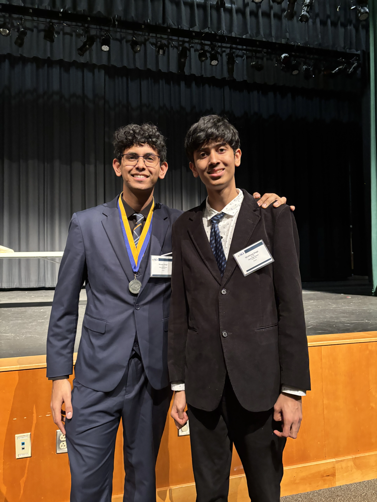
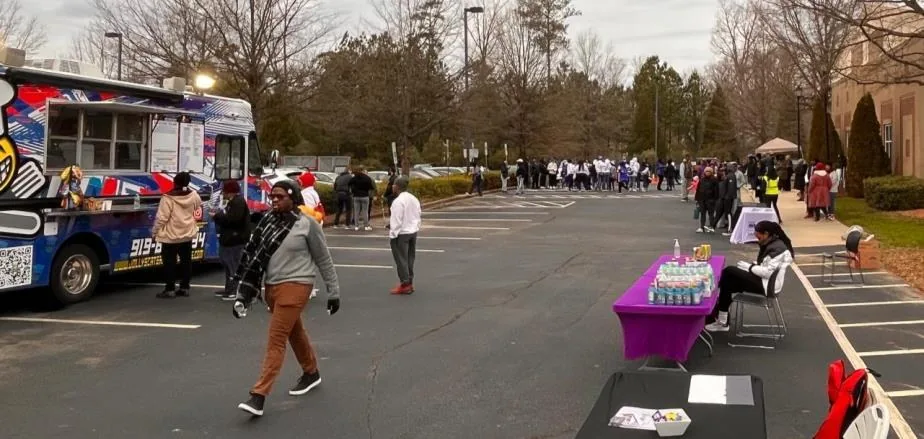
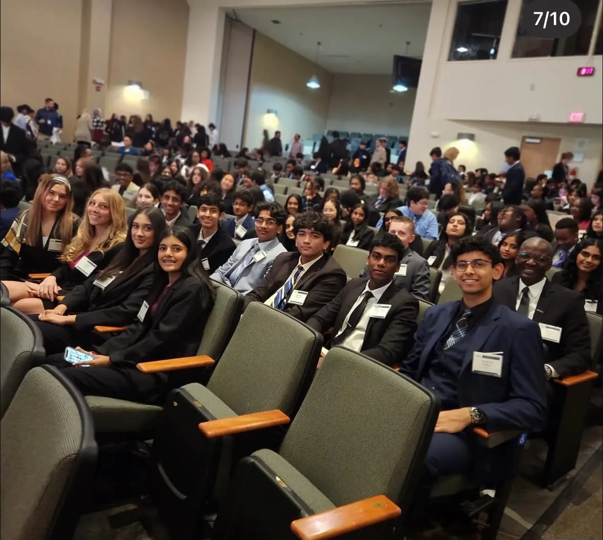
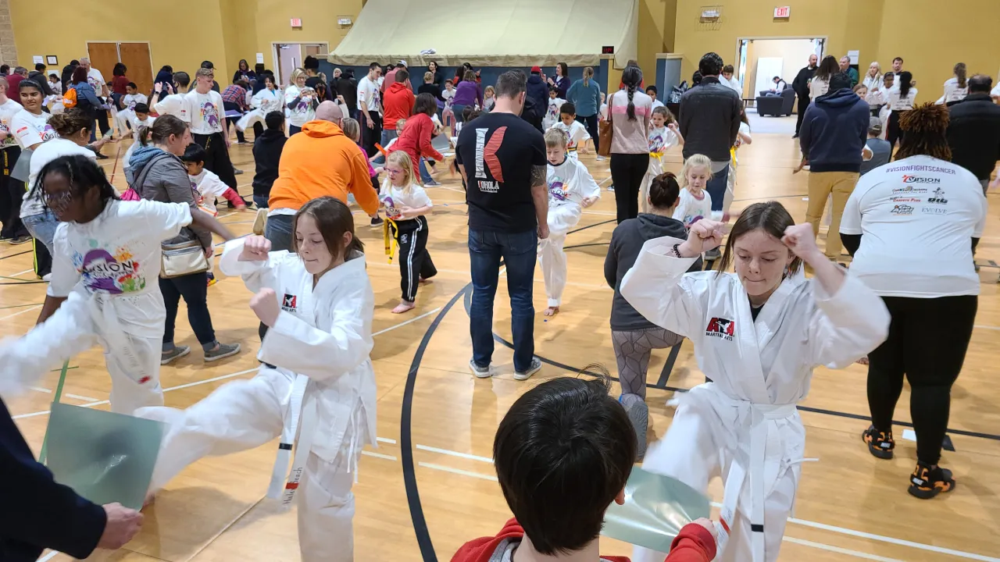
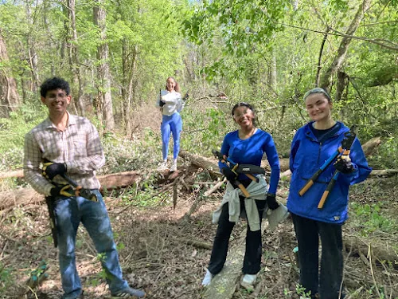

The heart of humanity.
My leadership spans entrepreneurship, competition, education, and community service, where I have taken responsibility for building systems, mentoring individuals, and delivering measurable outcomes.
Across these roles, I place communication, organization, and accountability on the highest pedestals. The goal is less to lead others than to serve as a man worthy of being followed.

I founded and led a personalized academic tutoring service supporting over 20 students across mathematics, physics, English, and standardized test preparation. I designed scheduling systems, developed individualized lesson plans, tracked student performance using data-driven methods, and continuously refined instruction to improve learning outcomes.

Over two months, my team partnered with Nice Realty — a family-owned real estate firm in Apex operating under The Ocean Group — and built its promotional presence from nothing. We called the strategy the Trident: online infrastructure, direct media marketing, and community endorsement. As Chief Presentation Officer, I supervised the drafting process, organized the team's work, and presented our results to the client.
We designed the company a logo, built its first website and social media pages, produced a flyer set, and sponsored Mt. Zion Church's MLK Day 5k Walk for Hope. Roughly 300 people attended the event, 60 came to our table, 10 expressed interest, and 5 contacted Nice Realty directly. Website traffic went from nonexistent to 220 visitors, and we delivered the whole project on $293.20 of an approved $500 budget.

I competed in FBLA's speaking events across both of my years in the organization, advancing to the national stage each time. These events are judged on building a clear argument under time pressure and delivering it live — no slides to hide behind, and questions from judges at the end.

I instructed martial arts classes across a wide age range while supporting program coordination, student progression tracking, and workshop execution. This role reinforced discipline, responsibility, and effective feedback practices in long-term skill development.
I organized educational outreach initiatives, coordinated volunteer teams, developed instructional materials, and supported fundraising efforts in collaboration with organizations such as the American Heart Association and local emergency services.

In my first semester at Duke, I found a wonderful community of volunteers. The Alpha Phi Omega chapter, within which I am initiated, has provided me with numerous opportunities to engage in community service and collaborate with organizations all over the Durham metro area.